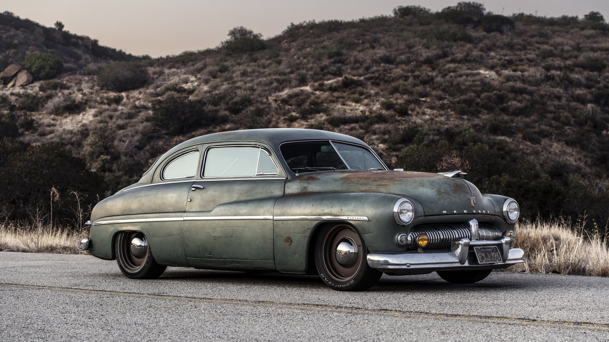
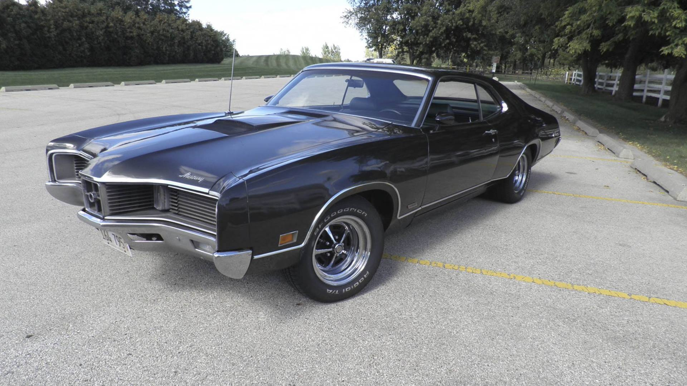
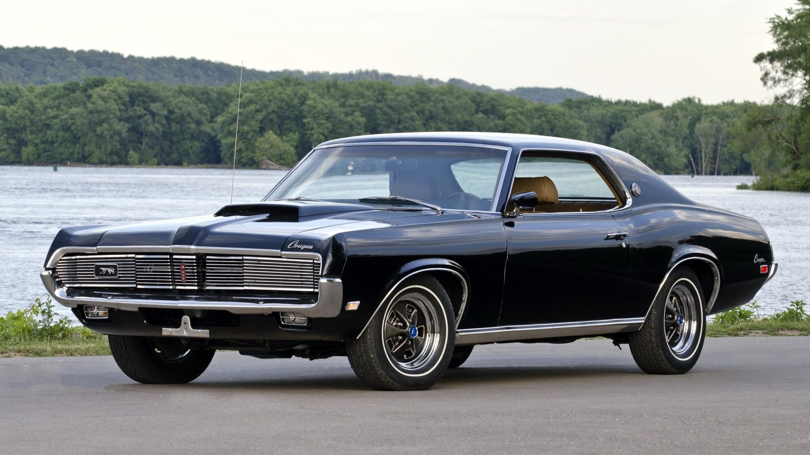
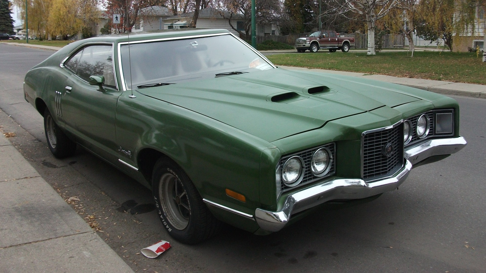

Mercury
Bakgrunn
Mercury blei grunnlagt i 1939. Hovudmålet deira var å produsere behaglege bilar. Dei skulle ikkje ha mykje hestekrefter, fordi då var det ikkje ein cruse-bil lengre. Den første bilen dei produserte hadde faktisk berre 95 hestekreffter. Mercury produserte ikkje dyre bilar heller, med ein startsum under tusen dollar, noko som svarar til ca 15 tusen dollar i dag. Mercury byrja bra med salge i 1939, så bra at dei selde heile 65800 modellar. Mercury fortsette denne trenden med høge salstal, men desverre i 2011 gjek dei konkurs.
LOGO
Viktige periodar
1949

Lincoln Coupe var ein av dei kjende modellane til Mercury. Med eit meir aerodynamisk utsjånad enn tidlegare modellar. Den kom no med 135 hestekrefter, noko som var ganske ok på den tiden.
1961

Tidleg på 60-talet lanserte Mercury Cyclone. Dei selde ikkje mange av dei, og modellen blir sett på som ein stor tabbe. Mercury hadde allereie identitetsproblem, og lanseringen av Cyclone hjelpte ikkje. Dei hadde ingen kjende modellar og salstala var heller ikkje høge.
1967-1970

1969 modellen av Mercury sin Cougar blir sett på som den vakraste av alle Cougerane. Den var meint som ein sportslegare bil og kunne bli levert med ein motor heilt opp til 7.0 liter. Dette er den første generasjonen av Cougar. Den delte nokon fellestrekk med Ford sin Thunderbird, og det var baklyktene på bilen.
1968-1976

Montego vart sett i produksjon i 1968 for at Mercury skulle ha noko som kjenneteikna dei. Dette var ein lukseriøs og komfortabel modell. Salgstala var gode nok for denne modellen, og den holdt Mercury i livet ein periode til.